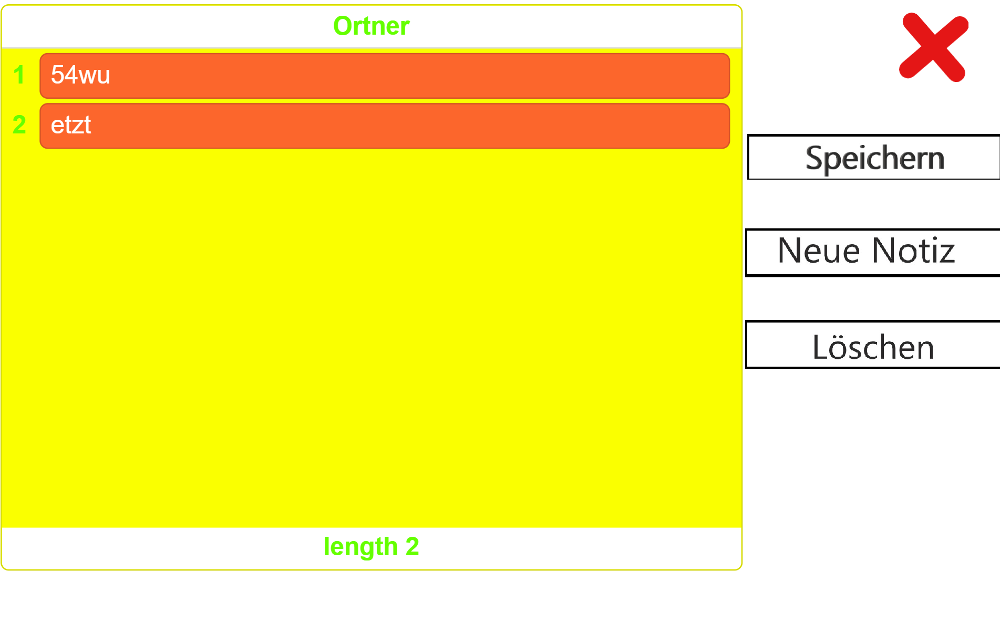

Notizbrett: Download und Infos
Notizbrett ist eine Anwendung , mit der sie sehr einfach Notizen erstellen können , wann sie wollen ! Wir haben das Programm vor ungefähr einen Jahr gestartet. Es bekam sehr lange keine Uptates mehr und jetzt arbeiten wir gerade an einer kompletten Neuprogrammierung in C# (WinForms) Es unterstützt weder Cloud-Syncronisierung noch irgendwas in diese Richtung, weshalb wir ihnen empfehlen, OneNote von Microsoft zu nutzen. Weil wir nicht viel Zeit hatten, um es zu erstellen, hat es außerdem viele Bugs.
SEHR WICHTIG: Die Dateien werden über Github Pages gehostet (releases-section) Bitte habt verständis damit
Programm erstellt von Simon (2024), hochgeladen von Simon (2025), Text geschrieben von Jonas (2025)
